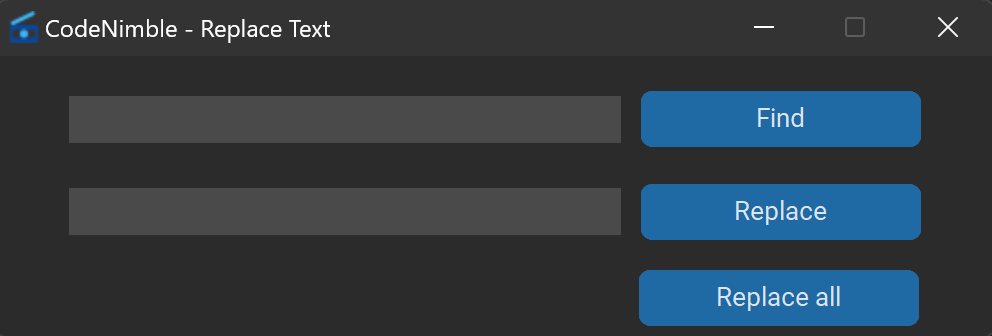

Autocompletion: Autocomplete for keywords like IF, WHILE, FOR, etc. and symbols like "", '', (), [], {}.
You need to type these keywords in textbox with CAPS and hit ENTER.
Here are all keywords: IF, WHILE, FOR, DO, CPP, INT, LONG, "", '', (), [], {}.
For INT & LONG will generate functions and CPP will generate CPP template in textbox.
File Management: Save and reopen files/folders with ease.
You can save a file/folder and it will open when you reopen the app -> File -> Save as default file/Save as default folder
Input & Output: Set input/output files and see the output directly in the app.
You can set 2 files for input & output e.g (input.in, output.out) and when you run the code the output will appear in the output textbox from the left panel.
Treeview: Displayed when opening a folder, useful for navigation.
Very useful for any occasion. It will be displaied when you open a folder from File -> Open Folder in the left of the window.
Find & Replace: Fast find and replace functionality.

Templates: Choose from various templates or create your own.
You can chose from a lot of templates: C++, C++ competitive, Java, C, HTML or you can create your own from Templates -> Create Template and use with Ctrl+Shift+T or with Templates -> Use Template.
These templates work like this: you select a template and a new tab will appear in the file tab with the template content
Run: Run C++ files directly from the app.
You can run C++ files directly from the app by using Utility -> Run or with F5
Paint Mode: A built-in tool for creating schemes or drawings.
You no longer need to open paint to make schemes or drawings because this tool will do all the work, you can use it from Utility -> Paint Mode or Ctrl+P and is like a Paint App
Local Server: Host or join a local server for collaborative coding.
Start Server -> you can host a server on you machine
Join Local Server -> you can join a server
Disconnect -> you can leave a server
Server Panel -> you can see the server members
C++ Support: Full support for C++ and partial support for Python with code suggestions and highlighting.